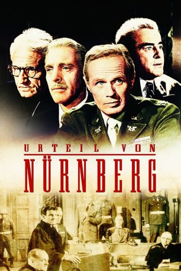

#9831 Urteil von Nürnberg
Alternativ: Judgment at Nuremberg
Auszeichnungen: 2 Oscars gewonnen für 9 Oscars nominiert 2 GoldenGlobes gewonnen
 
 IMDB-Wertung: 8.2 / 10
IMDB-Wertung: 8.2 / 10  IMDB-TOP-Platzierung: 138
IMDB-TOP-Platzierung: 138  Metascore: 0
Metascore: 0 
Vier ehemalige NS-Juristen stehen in Nürnberg vor Gericht. Den Vorsitz hat Richter Haywood. Verteidigt werden die Männer von Hans Rolfs. Drei von ihnen bekennen sich für "nicht schuldig". Der vierte, Dr. Ernst Janning, zeitweilig Justizminister unter Hitler, schweigt.
Jahr: 1961
Dauer: 190 Minuten
FSK: 12
Land: USA Studio: United ArtistsTonspuren: DD2.0 - ,
Untertitel: Deutsch,
Auflösung: 1080p (1792x1080) Größe: 14540 MB
Genre: Drama, Krieg
Regisseur:  Stanley Kramer
Stanley Kramer
Drehbuch: Abby Mann, Abby Mann, Montgomery Clift
Soundtrack: Ernest Gold
Darsteller:
 Spencer Tracy als Chief Judge Dan Haywood
Spencer Tracy als Chief Judge Dan Haywood Burt Lancaster als Dr. Ernst Janning
Burt Lancaster als Dr. Ernst Janning Richard Widmark als Col. Tad Lawson
Richard Widmark als Col. Tad Lawson- Marlene Dietrich als Mrs. Bertholt
 Maximilian Schell als Hans Rolfe
Maximilian Schell als Hans Rolfe Judy Garland als Irene Hoffman
Judy Garland als Irene Hoffman- Montgomery Clift als Rudolph Petersen
 William Shatner als Capt. Harrison Byers
William Shatner als Capt. Harrison Byers- Werner Klemperer als Emil Hahn
- Kenneth MacKenna als Judge Kenneth Norris
- Torben Meyer als Werner Lampe
 Alan Baxter als Brig. Gen. Matt Merrin
Alan Baxter als Brig. Gen. Matt Merrin Edward Binns als Sen. Burkette
Edward Binns als Sen. Burkette- Virginia Christine als Mrs. Halbestadt
 Otto Waldis als Pohl
Otto Waldis als Pohl Karl Swenson als Dr. Heinrich Geuter
Karl Swenson als Dr. Heinrich Geuter- Martin Brandt als Friedrich Hofstetter
 Ray Teal als Judge Curtiss Ives
Ray Teal als Judge Curtiss Ives- John Wengraf als Dr. Karl Wieck
 Ben Wright als Halbestadt
Ben Wright als Halbestadt- Howard Caine als Hugo Wallner
 Frank Baker als Courtroom Spectator (uncredited)
Frank Baker als Courtroom Spectator (uncredited) Oscar Beregi Jr. als Waiter at Court Lounge (uncredited)
Oscar Beregi Jr. als Waiter at Court Lounge (uncredited) Chet Brandenburg als Concert Attendee (uncredited)
Chet Brandenburg als Concert Attendee (uncredited)- Sheila Bromley als Mrs. Ives (uncredited)
 Victor Buono als Courtroom Spectator (uncredited)
Victor Buono als Courtroom Spectator (uncredited) Joseph Crehan als Courtroom Spectator at Verdict (uncredited)
Joseph Crehan als Courtroom Spectator at Verdict (uncredited) Sayre Dearing als Courtroom Spectator (uncredited)
Sayre Dearing als Courtroom Spectator (uncredited) Bess Flowers als Concert Attendee (uncredited)
Bess Flowers als Concert Attendee (uncredited) Herman Hack als Concert Attendee (uncredited)
Herman Hack als Concert Attendee (uncredited) Reed Howes als Courtroom Spectator (uncredited)
Reed Howes als Courtroom Spectator (uncredited) Colin Kenny als Courtroom Spectator (uncredited)
Colin Kenny als Courtroom Spectator (uncredited) Harold Miller als Courtroom Officer (uncredited)
Harold Miller als Courtroom Officer (uncredited)- Ed Nelson als Captain at Nightclub Announcing Call-up of Officers (uncredited)
 William H. O'Brien als German Prisoner in Cafeteria (uncredited)
William H. O'Brien als German Prisoner in Cafeteria (uncredited)- Mitchell Rhein als Courtroom Spectator (uncredited)
 Bert Stevens als German Prisoner in Cafeteria (uncredited)
Bert Stevens als German Prisoner in Cafeteria (uncredited) Jack Stoney als Courtroom Spectator (uncredited)
Jack Stoney als Courtroom Spectator (uncredited)- Joseph Bernard als Maj. Abe Radnitz
- Olga Fabian als Mrs. Elsa Lindnow
 Paul Busch als Schmidt
Paul Busch als Schmidt- Bernard Kates als Max Perkins
- Sam Bagley als Concert Attendee (uncredited)
 Alex Ball als Courtroom Spectator (uncredited)
Alex Ball als Courtroom Spectator (uncredited)- Brandon Beach als Courtroom Spectator (uncredited)
- Jack Berle als Club Patron (uncredited)
- Paul Bradley als Concert Attendee (uncredited)
- Brad Brown als Military Policeman (uncredited)
- Dick Cherney als Concert Attendee (uncredited)
- John Clarke als Prison Guard (uncredited)
Datei: X:\1961\Urteil von Nürnberg (1961, FSK12, 1792x1080).mkv seit 30.10.2018
Festplatte: HD 1900-1970
 Es gibt insgesamt 22 Filme in der Gruppe '1961'
Es gibt insgesamt 22 Filme in der Gruppe '1961'